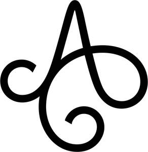

Trade Mark Journal No.2026/001 2 January 2026
UK00004311525 16 December 2025 (9,14,18,25)

International priority date claimed: 1 July 2025
(European Union Intellectual Property Office (EUIPO))
(019210388)
- Class 9
- Sunglasses; Clip-on sunglasses; Cases for sunglasses; Chains for sunglasses; Spectacles; Spectacle chains; Bags adapted for laptops.
- Class 14
- Jewellery; Earrings; Necklaces [jewellery]; Rings [jewellery]; Wristwatches; Bracelets for watches; Clocks and watches; Precious jewellery; Enamelled jewellery; Gold rings; Trinkets coated with precious metal; Key rings [split rings with trinket or decorative fob]; Key rings [trinkets or fobs] of precious metal; Bracelets [jewellery]; Pendants; Paste jewellery; Decorative articles [trinkets or jewellery] for personal use; Decorative brooches [jewellery]; Diadems; Sterling silver jewellery; Crosses [jewellery]; Chains of precious metals; Chains [jewellery]; Gold plated bracelets; Gold plated chains; Gold plated rings; Gold chains; Ankle bracelets; Articles of jewellery made of precious metal alloys; Jewellery made of precious stones; Earrings of precious metal; Gold earrings; Jewellery made of precious metals; Jewellery coated with precious metal alloys; Jewellery made of plastics; Jewellery rope chain for bracelets; Jewellery rope chain for necklaces; Jewellery chain of precious metal for necklaces; Jewellery chain of precious metal for bracelets; Women's watches; Gold alloys; Imitation gold; Precious and semi-precious gems; Semi-wrought precious stones and their imitations; Pearl; Natural gem stones; Silver.
- Class 18
- Bags; Garment carriers; Umbrellas; Umbrella covers; Shoulder straps; Evening handbags; Leather and imitations of leather; Leather, unworked or semi-worked; Imitation leather; Leather cord; Shoulder bags; Vanity cases, not fitted; Nappy bags; Bumbags; Multi-purpose purses; Ladies' handbags; Flight bags; Trunks [luggage]; Carry-on bags; Wheeled shopping bags; Handbags, purses and wallets; Handbags made of leather; Handbags made of imitations leather; Handbags; Pouches; Pocket wallets; Key cases; Key cases made of leather; Leather credit card wallets; Card cases [notecases]; Credit card cases [wallets]; Rucksacks; Travelling sets; Garment bags for travel; Travel luggage; Briefcases; Wallets including card holders; Card wallets [leatherware]; Weekend bags; Work bags; Reusable shopping bags; Toiletry bags; Suitcases.
- Class 25
- Clothing; Footwear; Headgear; Ladies' clothing; Dresses; Tops [clothing]; Dinner jackets; Cardigans; Outerclothing; Bathing suits; Shawls and headscarves; Belts [clothing]; Leather belts [clothing].
Endoore AB
Representative: Abion UK Limited